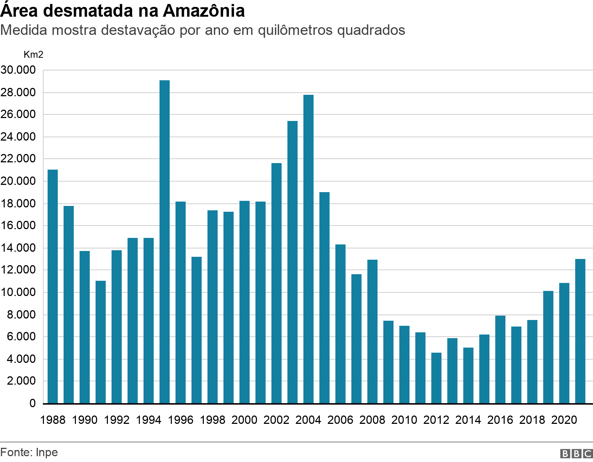
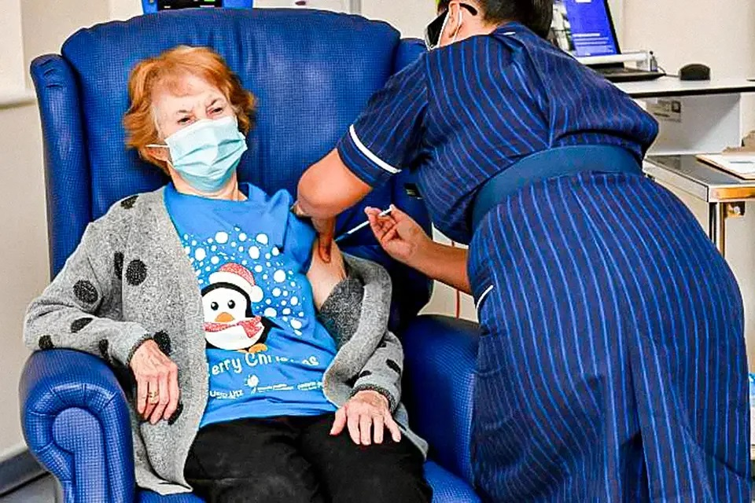
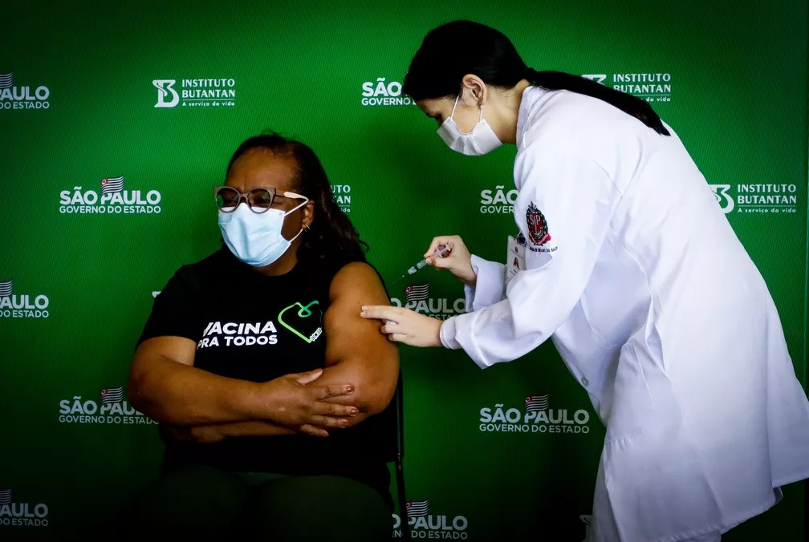
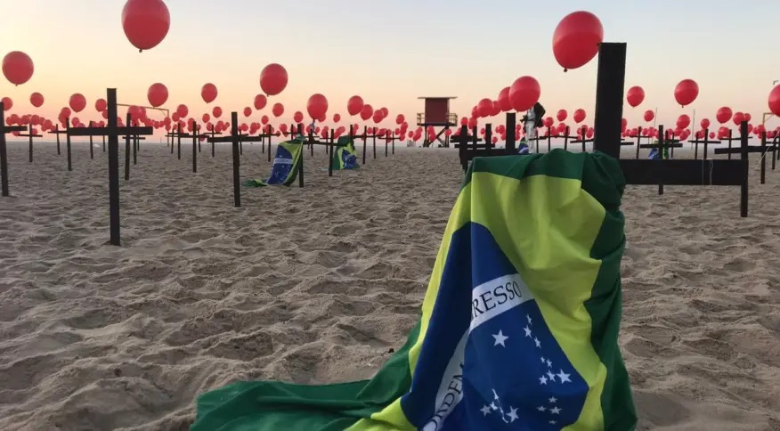
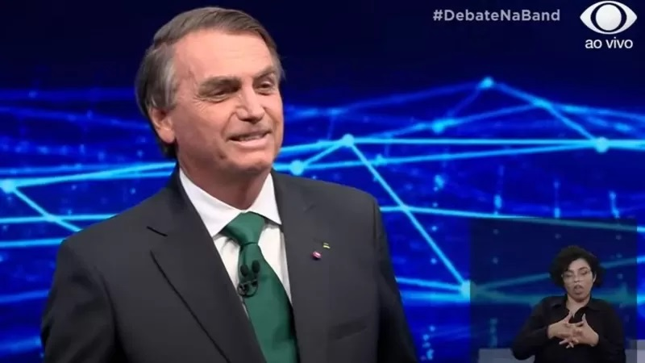

TAXA DE DESMATAMENTO DOS GOVERNOS
Numa das pautas do Debate, esteve presente o assunto sobre desmatamento da amâzonia.
O ex-presidente Luiz Inácio Lula da Silva afirmou que o atual governo está "brincando de desmatar, de 'abrir cerca', de derrubar árvores"."Nós vamos ganhar as eleições para poder cuidar da Amazônia e não permitir que haja invasão de terra indígena e garimpo ilegal."
O presidente Jair Bolsonaro (PL), candidato à reeleição, rebateu e pediu que os espectadores fizessem uma pesquisa na internet.
"Dá um Google: 'desmatamento de 2003 a 2006', nos quatro anos de governo Lula. Depois pesquise 'desmatamento de 2019 a 2022'", disse. Olhando para Lula, Bolsonaro emendou: "No seu governo, foi desmatado o dobro do que no meu".
E ai? quem está certo?
De fato, a área total de floresta destruída durante os três primeiros anos do governo Lula foi maior em comparação com o mesmo período de Bolsonaro no cargo — mas a taxa de desmatamento foi reduzida significativamente e chegou aos menores patamares históricos entre 2006 e 2015, especialmente no período em que Dilma Rousseff (PT) assumiu a Presidência.

PANDEMIA NO BRASIL
Lula no debate questionou Bolsonaro por sua falta de postura e comprometimento com a Pandemia da Covid-19
"O Brasil tem 5% da população mundial e 11% das mortes. Por que houve tanta demora para comprar vacina?", questionou Lula.
"No Brasil, em janeiro de 2021 começaram a vacinar. Todos aqueles que quiseram se vacinar, se vacinaram. E o Brasil foi um dos países que vacinou mais rápido", afirmou Bolsonaro
Quando realmente começou a vacinação? Quantas mortes o brasil teve na Pandemia?
Em 8 de dezembro de 2020, o Reino Unido convocava Margaret Keenan, de 90 anos, para ser a primeira pessoa a ser imunizada em uma campanha mundial de vacinação de dimensão histórica, uma corrida contra o tempo para conter a pandemia de coronavírus.

Já no Brasil no dia 17 de janeiro de 2021, o governo de São Paulo começou a vacinar profissionais de saúde, indígenas e quilombolas .
A primeira a receber a vacina em território nacional foi a enfermeira Mônica Calazans, em evento realizado no Hospital das Clínicas da Universidade de São Paulo (HC-USP).Já somam mais de 34 Milhões de casos, e somam mais de 600 Mil mortes.


FAKE NEWS
Uma declaração de Bolsonaro, dada em entrevista a um podcast, causou polêmica nas redes sociais nesta semana após ele narrar um episódio em que teria visto adolescentes venezuelanas em situação de vulnerabilidade no Distrito Federal. Vídeos mostram o presidente dizendo que "pintou um clima" ao passar pelas meninas que, segundo ele próprio, teriam entre 14 e 15 anos.
Bolsonaro aproveitou a pergunta de um jornalista para tocar no tema e chamar a campanha de Lula de mentirosa.
"O seu programa, influenciado por Gleisi Hoffmann, me acusou de pedofilia, tentando me atingir naquilo que tenho mais de sagrado: a defesa da família brasileira, defesa das crianças", afirmou Bolsonaro.
E usou uma decisão do Tribunal Superior Eleitoral (TSE), tomada pelo ministro Alexandre de Moraes, que mandou excluir vídeo sobre as meninas e também proibiu que o PT o use em sua campanha.
"O sr. Alexandre de Moraes dá uma sentença contrária a essas mentiras. Diz a sentença aqui: 'A postagem realizada pela representada Gleisi Hoffmann (que representa o PT), em 15 de outubro, agora, se descola da realidade por meio de inverdades, fazendo uso de recortes em encadeamentos inexistentes de falas gravemente descontextualizadas do representante Jair Bolsonaro, com o intuito de induzir o eleitorado negativamente. Tal contexto evidencia a divulgação de fato'." Lula, por outro lado, diz que o adversário dele tem 36 processos por fake news
"A imprensa publica fartamente que pelo menos seis ou sete mentiras por dia são contadas (por Bolsonaro). Brinca-se de contar mentira. Levanta de madrugada, tem vontade, vai e conta uma mentira, faz uma live e conta uma mentira, sabe? Levanta até uma hora da manhã para fazer live", afirmou o petista.
